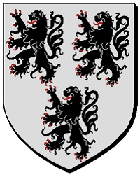

192283099 Sibyl de Chaworth
* 1100 Kempsford, Gloucestershire, England
† 1140 Bradenstoke, Wiltshire, England
Blev högst 40 år
* 1100 Kempsford, Gloucestershire, England
† 1140 Bradenstoke, Wiltshire, England
Blev högst 40 år
384566198 Patrick l'Ancien de Chaworth
* omkring 1052 Maine, Pays de la Loire, Frankrike
† omkring 1133 Gloucestershire, England
Blev ca 81 år
* omkring 1052 Maine, Pays de la Loire, Frankrike
† omkring 1133 Gloucestershire, England
Blev ca 81 år
769132396 Seigneur Hugh de Chaworth
* 1025 Maine, Charente, Frankrike
† 1097 Nottinghamshire, England
Seigneur de Kempsford & Glouchestershire
Blev högst 72 år
* 1025 Maine, Charente, Frankrike
† 1097 Nottinghamshire, England
Seigneur de Kempsford & Glouchestershire
Blev högst 72 år

769132397 Hawise Berthe de Quarouble
* omkring 1037
†
* omkring 1037
†
1538264794 Seigneur Evrard de Quarouble
* omkring 1013 Quarouble, Nord-Pas-de Calais
† 1047-04
Blev ca 34 år
* omkring 1013 Quarouble, Nord-Pas-de Calais
† 1047-04
Blev ca 34 år

1538264795 Dame Ida de Roncq
* omkring 1018
Dame of Roncq
* omkring 1018
Dame of Roncq

384566199 Matilda (Maud) de Hesdin
* omkring 1065 Frankrike
† efter 1133 Bedfordshire, England
* omkring 1065 Frankrike
† efter 1133 Bedfordshire, England

769132398 Crusader Ernulf de Hesdin
* omkring 1038 Hesdin, Duchy of Lorraine, Frankrike
† 1098 Antiokia, Hatay Province, Turkiet
Korsriddare
Blev ca 60 år
* omkring 1038 Hesdin, Duchy of Lorraine, Frankrike
† 1098 Antiokia, Hatay Province, Turkiet
Korsriddare
Blev ca 60 år
1538264796 Gerhardt Hesdin
* omkring 1015 Hesdin, Pas-de-Calaise, Frankrike
†
* omkring 1015 Hesdin, Pas-de-Calaise, Frankrike
†

769132399 Emmeline Ballon au Maine (de Normandy)
* omkring 1038 Falaise, Calvados, Normandie, Frankrike
† 1094 Calais, Frankrike
Blev ca 56 år
* omkring 1038 Falaise, Calvados, Normandie, Frankrike
† 1094 Calais, Frankrike
Blev ca 56 år